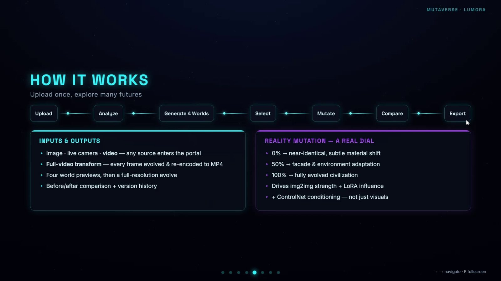
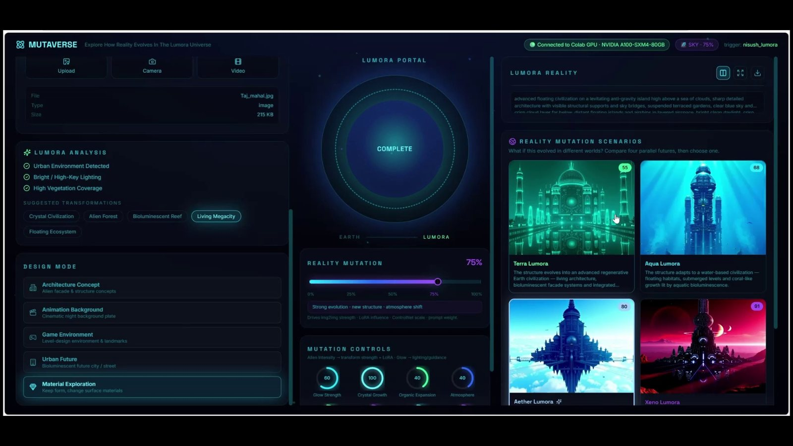
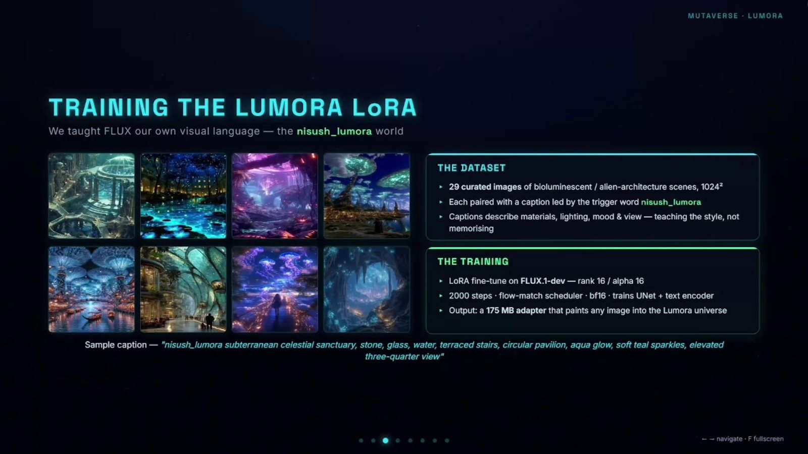
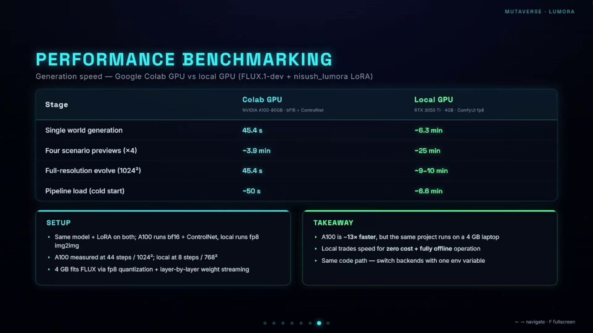

MUTAVERSE
Generative AI · Term 3Instead of asking “what should this building look like?”, MUTAVERSE asks a different question, what if the building stayed the same, but the world around it changed? A mutation engine that turns one architectural design into four completely different worlds, while preserving its identity.
▶ Watch the demo-
Identity preservedthe building stays recognizable
-
The world mutatesenvironment, not appearance
-
Control the distancesubtle change → new universe
Team: Nihan Malkoç · Sushmitha Ravi · Faculty: James McBennett · Aymeric Brouez
One Building, Four Worlds
A single design mutates into four distinct universes, each a different environment, same architectural identity.
Terra Lumora
A living, biophilic world.
Aqua Lumora
An underwater civilization.
Aether Lumora
A floating sky city.
Xeno Lumora
An alien landscape.
How It Works
Unlike traditional AI image generation that changes a building's appearance, MUTAVERSE keeps the building recognizable and reimagines the environment around it. Powered by FLUX.1-dev, a custom-trained LoRA and ControlNet, users control how far reality mutates, from subtle environmental shifts to entirely new universes. One guided flow: upload → analyze → generate four worlds → mutate → compare → export.

The Interface
Upload once, then explore many futures, mutate the world, dial the reality slider, and compare the variants side by side.


Under the Hood
A custom Lumora LoRA was trained on FLUX to teach the four worlds, and the pipeline was benchmarked across a Colab GPU and a local GPU for generation speed.


Live Demo
If you could drop your next building anywhere, where would it be? 🌍🌊☁️🪐